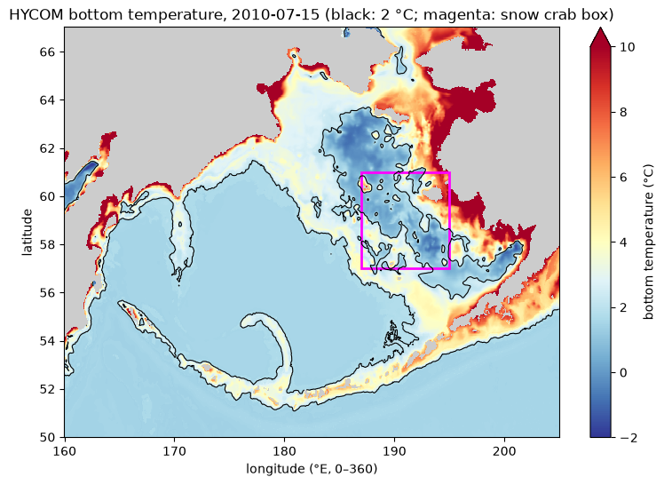
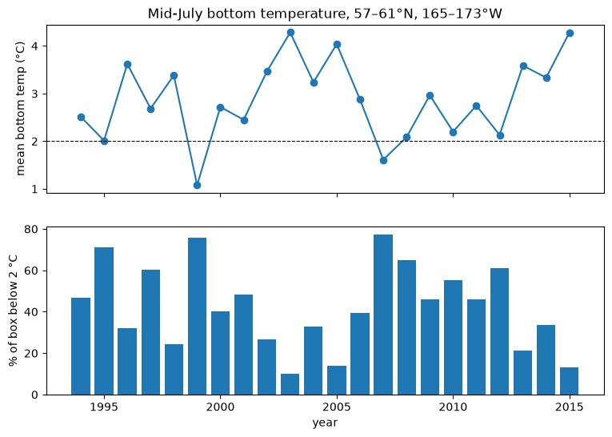

%pip install -q "icechunk>=2.2" "xarray>=2026.7" "zarr>=3.4" "dask[array]" matplotlibHYCOM: bottom temperature in the snow crab region

A short demo of the HYCOM GOFS 3.1 global reanalysis (1/12°, 3-hourly, 1994–2015) as a virtual Icechunk store: open 306 TB in about a second, cut out the Bering Sea, map it, then build a time series of bottom temperature on the snow crab grounds of the eastern Bering Sea shelf.
No credentials needed. Runs on Google Colab (Python 3.12).
Adapted from bering-sea-snow-crab-demo.ipynb in ocean-icechunks/hycom.
Open the dataset
The store holds only metadata; every value is read by byte range from the NetCDF files in the HYCOM bucket on AWS Open Data. chunks=None keeps it lazy without building a huge dask graph — we select first and add dask only to what we select.
import icechunk, xarray as xr, zarr
import matplotlib.pyplot as plt, matplotlib.patches as mpatches
zarr.config.set({"async.concurrency": 64})
url = "https://data.source.coop/ocean-icechunks/hycom/hycom-gofs-3pt1-reanalysis"
repo = icechunk.Repository.open(icechunk.http_storage(url))
# Authorize anonymous reads from the HYCOM bucket, where the data actually live.
auth = {p: icechunk.credentials.HttpAccess for p in repo.config.virtual_chunk_containers}
repo = repo.reopen(authorize_virtual_chunk_access=auth)
ds = xr.open_zarr(repo.readonly_session(tag="v1").store, consolidated=False, chunks=None)
ds<xarray.Dataset> Size: 1PB
Dimensions: (time: 64272, depth: 40, lat: 3251, lon: 4500)
Coordinates:
* time (time) datetime64[ns] 514kB 1994-01-01T12:00:00 ... 20...
experiment (time) int16 129kB ...
tau (time) float64 514kB ...
* depth (depth) float64 320B 0.0 2.0 4.0 ... 3e+03 4e+03 5e+03
* lat (lat) float64 26kB -80.0 -79.96 -79.92 ... 89.96 90.0
* lon (lon) float64 36kB -180.0 -179.9 -179.8 ... 179.8 179.9
Data variables:
salinity (time, depth, lat, lon) float64 301TB ...
surf_el (time, lat, lon) float64 8TB ...
water_temp_bottom (time, lat, lon) float64 8TB ...
water_temp (time, depth, lat, lon) float64 301TB ...
water_v (time, depth, lat, lon) float64 301TB ...
salinity_bottom (time, lat, lon) float64 8TB ...
water_u_bottom (time, lat, lon) float64 8TB ...
water_u (time, depth, lat, lon) float64 301TB ...
water_v_bottom (time, lat, lon) float64 8TB ...
Attributes: (12/15)
classification_level: UNCLASSIFIED
distribution_statement: Approved for public release. Distribution unli...
downgrade_date: not applicable
classification_authority: not applicable
institution: Naval Oceanographic Office
source: HYCOM archive file
... ...
title: HYCOM GOFS 3.1 Global Ocean Reanalysis, GLBv0....
experiment_id: GLBv0.08 expt_53.X
source_Conventions: CF-1.6 NAVO_netcdf_v1.1
references: https://www.hycom.org/dataserver/gofs-3pt1/rea...
source_data: s3://hycom-gofs-3pt1-reanalysis (us-west-2), N...
comment: Virtual Icechunk store: Zarr metadata and byte...Nothing has been read yet but metadata, and xarray already knows how much data it can reach:
print(f"Size reported by xarray: {ds.nbytes / 1e15:.2f} PB")Size reported by xarray: 1.24 PBxarray counts the values as they come out decoded. The files hold them as 16-bit integers, about 306 TB; unpacked to 64-bit floats they would be four times that.
Map: Bering Sea bottom temperature
water_temp_bottom is the temperature at the sea floor — the water crabs actually sit in. The Bering Sea straddles the dateline and the store runs −180…180, so take the two sides separately and put them together on a 0–360 longitude axis. (Each side is .load()ed before joining: xr.concat on the lazy store would otherwise try to read everything.)
On the map, the blue tongue on the shelf inside the black 2 °C line is the cold pool. The deep basin to the southwest is also just under 2 °C, so the same line traces the shelf break as well.
when = "2010-07-15T12" # mid-July, when NOAA's summer bottom-trawl survey is at sea
da = ds.water_temp_bottom.sel(time=when, lat=slice(50, 67))
bering = xr.concat([da.sel(lon=slice(160, 180)).load(),
da.sel(lon=slice(-180, -155)).load()], dim="lon")
bering = bering.assign_coords(lon=bering.lon % 360) # 160°E … 205° (= 155°W)
# The snow crab box used below: eastern Bering Sea middle/outer shelf.
box = dict(lat=(57, 61), lon=(-173, -165))
fig, ax = plt.subplots(figsize=(9, 6))
bering.plot(ax=ax, cmap="RdYlBu_r", vmin=-2, vmax=10,
cbar_kwargs={"label": "bottom temperature (°C)"})
bering.plot.contour(ax=ax, levels=[2], colors="k", linewidths=0.8) # the 2 °C "cold pool" edge
ax.add_patch(mpatches.Rectangle((box["lon"][0] % 360, box["lat"][0]),
box["lon"][1] - box["lon"][0], box["lat"][1] - box["lat"][0],
fill=False, ec="magenta", lw=2))
ax.set(title=f"HYCOM bottom temperature, {when[:10]} (black: 2 °C; magenta: snow crab box)",
xlabel="longitude (°E, 0–360)", ylabel="latitude")
ax.set_facecolor("0.8") # land is NaN
plt.show()
Time series: bottom temperature on the snow crab grounds
Snow crab live on the eastern Bering Sea shelf in cold bottom water; the juveniles depend on the cold pool, water below 2 °C left on the bottom after winter sea ice. Here is one mid-July snapshot per year, 1994–2015, over the box above: the box-mean bottom temperature and the fraction of the box inside the cold pool.
Each snapshot is the 12Z analysis nearest 15 July (a few analyses are missing from the archive, so the nearest present one is used). Note that any read inside a map fetches the whole 29 MB global level, so this is 22 reads, about 0.6 GB — seconds in AWS us-west-2, somewhat longer elsewhere. A long daily or 3-hourly series would be thousands of reads.
import dask, numpy as np
analyses = ds.time[(ds.tau == 0).values] # 12Z analyses that exist in the archive
times = [analyses.sel(time=f"{y}-07-15T12", method="nearest").values for y in range(1994, 2016)]
crab = ds.water_temp_bottom.sel(time=times, lat=slice(*box["lat"]), lon=slice(*box["lon"]))
crab = crab.chunk({"time": 1}) # stream one time step at a time, in parallel
weights = np.cos(np.deg2rad(crab.lat)) # grid cells shrink toward the pole
ocean = crab.notnull()
mean_temp = crab.weighted(weights).mean(["lat", "lon"])
cold_frac = (crab < 2).where(ocean).weighted(weights).mean(["lat", "lon"])
mean_temp, cold_frac = dask.compute(mean_temp, cold_frac)
mean_temp<xarray.DataArray 'water_temp_bottom' (time: 22)> Size: 176B
array([2.51213641, 2.01436553, 3.6235869 , 2.68578106, 3.38307284,
1.0767102 , 2.71902263, 2.45100718, 3.46485532, 4.28402676,
3.23857526, 4.03764555, 2.87527712, 1.61261083, 2.08411859,
2.96470531, 2.20018629, 2.74792432, 2.13244323, 3.58775514,
3.33446937, 4.28218323])
Coordinates:
* time (time) datetime64[ns] 176B 1994-07-15T12:00:00 ... 2015-07-16...
experiment (time) int16 44B 530 530 530 530 530 531 ... 537 537 538 538 539
tau (time) float64 176B 0.0 0.0 0.0 0.0 0.0 ... 0.0 0.0 0.0 0.0 0.0
Attributes:
long_name: Water Temperature
standard_name: sea_water_temperature_at_sea_floor
units: degC
NAVO_code: 15
comment: in-situ temperature
units_metadata: temperature: on_scaleyears = mean_temp.time.dt.year
fig, (ax1, ax2) = plt.subplots(2, 1, figsize=(9, 6), sharex=True)
ax1.plot(years, mean_temp, "o-")
ax1.axhline(2, color="k", lw=0.8, ls="--")
ax1.set(ylabel="mean bottom temp (°C)",
title=f"Mid-July bottom temperature, {box['lat'][0]}–{box['lat'][1]}°N, "
f"{-box['lon'][1]}–{-box['lon'][0]}°W")
ax2.bar(years, 100 * cold_frac, color="tab:blue")
ax2.set(ylabel="% of box below 2 °C", xlabel="year")
plt.show()
Warm years (2001–2005, 2014–2015) shrink the cold pool on the crab grounds; cold years (1999, 2007–2012) spread it across most of the box. This broadly matches the warm and cold stanzas seen in NOAA’s summer survey bottom temperatures. HYCOM is a model reanalysis: it is a physically consistent estimate constrained by observations, not a measurement at each point.
More: the dataset README covers the full variable list, missing time steps, and what reads cost.